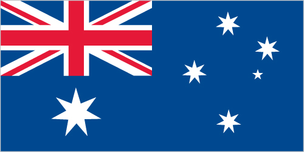

Australia-Oceania :: ASHMORE AND CARTIER ISLANDS
Introduction :: ASHMORE AND CARTIER ISLANDS
-
These uninhabited islands came under Australian authority in 1931; formal administration began two years later. Ashmore Reef supports a rich and diverse avian and marine habitat; in 1983, it became a National Nature Reserve. Cartier Island, a former bombing range, became a marine reserve in 2000.
Geography :: ASHMORE AND CARTIER ISLANDS
-
Southeastern Asia, islands in the Indian Ocean, midway between northwestern Australia and Timor island12 14 S, 123 05 ESoutheast Asiatotal: 5 sq kmland: 5 sq kmwater: 0 sq kmnote: includes Ashmore Reef (West, Middle, and East Islets) and Cartier Islandcountry comparison to the world: 251about eight times the size of the National Mall in Washington, DC0 km74.1 kmterritorial sea: 12 nmcontiguous zone: 12 nmexclusive fishing zone: 200 nmcontinental shelf: 200-m depth or to the depth of exploitationtropicallow with sand and coralmean elevation: NAelevation extremes: lowest point: Indian Ocean 0 mhighest point: Cartier Island 5 mfishagricultural land: 0%forest: 0%other: 100% (all grass and sand) (2011 est.)surrounded by shoals and reefs that can pose maritime hazardsillegal killing of protected wildlife by traditional Indonesian fisherman, as well as fishing by non-traditional Indonesian vessels, are ongoing problemsAshmore Reef National Nature Reserve established in August 1983; Cartier Island Marine Reserve established in 2000
People and Society :: ASHMORE AND CARTIER ISLANDS
-
no indigenous inhabitantsnote: Indonesian fishermen are allowed access to the lagoon and fresh water at Ashmore Reef's West Island; access to East and Middle Islands is by permit only
Government :: ASHMORE AND CARTIER ISLANDS
-
conventional long form: Territory of Ashmore and Cartier Islandsconventional short form: Ashmore and Cartier Islandsetymology: named after British Captain Samuel ASHMORE, who first sighted his namesake island in 1811, and after the ship Cartier, from which the second island was discovered in 1800territory of Australia; administered from Canberra by the Department of Regional Australia, Local Government, Arts and Sportthe laws of the Commonwealth of Australia and the laws of the Northern Territory of Australia, where applicable, applysee Australianone (territory of Australia)none (territory of Australia)the flag of Australia is used
Economy :: ASHMORE AND CARTIER ISLANDS
-
no economic activity
Transportation :: ASHMORE AND CARTIER ISLANDS
-
none; offshore anchorage only
Military and Security :: ASHMORE AND CARTIER ISLANDS
-
defense is the responsibility of Australia; periodic visits by the Royal Australian Navy and Royal Australian Air Force
Transnational Issues :: ASHMORE AND CARTIER ISLANDS
-
Australia has closed parts of the Ashmore and Cartier reserve to Indonesian traditional fishing; Indonesian groups challenge Australia's claim to Ashmore Reef